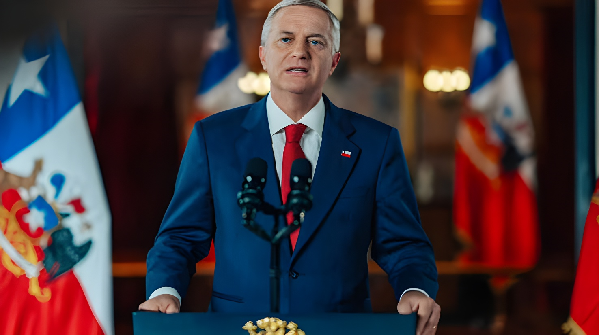

Le 22 septembre 2026, à New York, en marge de la 81e Assemblée générale des Nations unies, le président José Antonio Kast a annoncé l'adhésion du Chili à l'« Escudo de las Américas » (Bouclier des Amériques), coalition de lutte contre le crime organisé transnational promue par Donald Trump. Jusque-là simple observateur, le Chili rejoint un groupe de quinze gouvernements, États-Unis compris. La Moneda assure qu'il s'agit d'une coordination volontaire et non d'un traité, mais la décision a immédiatement ravivé le débat sur la souveraineté et l'autonomie de la politique étrangère chilienne.
Le « Bouclier des Amériques » a été lancé le 7 mars 2026 lors d'un sommet organisé par Donald Trump dans son complexe Trump National Doral, près de Miami, avec une douzaine de dirigeants latino-américains et caribéens — dont José Antonio Kast, alors président élu, investi quatre jours plus tard. Présentée comme un mécanisme de coordination militaire et de renseignement contre les cartels, l'initiative s'inscrit dans la Stratégie de sécurité nationale de la Maison-Blanche, qui prône une version rénovée de la doctrine Monroe, que Trump lui-même surnomme « Donroe ». Elle accompagne une campagne américaine de frappes contre des embarcations soupçonnées de transporter de la drogue dans les Caraïbes et le Pacifique, qui a fait plus de 200 morts selon les chiffres officiels américains et que des experts de l'ONU jugent contraire au droit international.
Tous les pays de la région n'ont pas suivi : le Brésil et le Mexique restent hors de la coalition, et le président Lula a mis en garde à l'ONU contre de « renouvelées tentations hégémoniques » en affirmant que « le Brésil n'est l'arrière-cour de personne ». La Colombie, absente du sommet de Doral sous Gustavo Petro, a rejoint le bloc après l'investiture d'Abelardo de la Espriella le 7 août 2026, et le Pérou s'y est également rallié. Jusqu'au 22 septembre, le Chili n'y figurait qu'en qualité d'observateur.
Sommet fondateur du Bouclier des Amériques à Doral, en Floride, en présence de Kast, alors président élu. Le Brésil, la Colombie et le Mexique ne sont pas invités.
À Santiago, le Chili, l'Argentine, le Pérou, la Bolivie et l'Équateur signent le « Compromiso de Santiago » contre le crime organisé transnational, que Kast qualifie d'« historique ». Le Paraguay les rejoindra ensuite.
Lors d'une réunion du bloc à Panama, le secrétaire américain à la Guerre, Pete Hegseth, presse les pays membres de quitter la Cour pénale internationale. Le ministre chilien de la Défense, Fernando Barros, répond que « le Chili n'est l'arrière-cour d'aucun pays » et évoque une réponse formelle en novembre ; le chancelier Francisco Pérez Mackenna rappelle que le Chili reste membre de la CPI.
Kast confirme sur Radio Agricultura que le Chili reste « observateur » et que chaque pays doit analyser la proposition américaine selon sa propre institutionnalité.
Après son discours devant l'Assemblée générale de l'ONU, Kast participe à la deuxième réunion du Bouclier, présidée par Donald Trump. Quelques heures plus tard, le ministère des Affaires étrangères annonce que le Chili « a décidé d'adhérer » à l'initiative.
Dans son communiqué, le gouvernement présente le Bouclier comme un « cadre de coordination volontaire entre gouvernements américains » permettant de combattre plus efficacement le crime organisé transnational. Il en attend des bénéfices opérationnels immédiats : accès à l'information sur le crime organisé, systèmes d'analyse intelligente de données, formation des Carabineros et de la police d'investigation (PDI), et meilleure coordination frontalière avec l'Argentine, la Bolivie et le Pérou. Le texte range le Tren de Aragua et les cartels mexicains de Jalisco Nouvelle Génération et de Sinaloa parmi les menaces « réelles et complexes », et précise que chaque État agit conformément à ses obligations juridiques internationales et nationales.
Le même jour, les quinze gouvernements ont publié une déclaration commune annonçant leur intention de geler les avoirs, de restreindre les visas et de poursuivre pénalement les membres et soutiens de 24 organisations criminelles — dont MS-13, le Tren de Aragua, les grands cartels mexicains, l'ELN colombienne, le PCC et le Comando Vermelho brésiliens ou le Sendero Luminoso péruvien —, toutes déjà inscrites sur des listes américaines. Les signataires comptent aussi demander au Conseil permanent de l'OEA de constituer l'organe de consultation du Traité interaméricain d'assistance réciproque (TIAR), pacte signé en 1947.
| Indicateur | Chiffre | Source |
|---|---|---|
| Gouvernements de la coalition | 15 | Département d'État américain |
| Groupes criminels visés | 24 | Déclaration commune / AFP |
| Sommet fondateur | 7 mars 2026 | Doral (Floride) |
| Compromiso de Santiago | 28 mai 2026 | Cancillería / AP |
| Brésil et Mexique | Hors coalition | Reuters / Al Jazeera |
« Il n'y a pas ici de traité, pour que personne ne croie qu'on porte atteinte à la souveraineté du Chili et à l'institutionnalité nationale. »
— José Antonio Kast, New York, 22 septembre 2026Depuis New York, Kast a insisté sur le fait que le Chili adhère à une « coordination conjointe de 15 pays » : échange d'informations et suivi des bandes, sans cession de souveraineté ni opérations militaires. Il a ajouté que la question d'éventuelles interventions d'un pays contre le crime organisé n'avait pas été abordée lors de la réunion.
L'annonce a aussitôt divisé la classe politique. Dans l'opposition, le sénateur Vlado Mirosevic (Parti libéral) dénonce un alignement « évident » et « dangereux » sur Trump, contraire à la tradition chilienne de « non-alignement actif », et parle d'un « club de fans de Donald Trump » ; les groupes libéral et socialiste ont demandé une session spéciale du Sénat pour que le chancelier explique ce qui a été signé. Les présidents du PPD, Raúl Soto, et de la Démocratie chrétienne, José Miguel Ortiz, membres de la délégation à New York, jugent la décision « une erreur » : le Chili est partie au Statut de Rome et l'alliance serait, selon Soto, « de caractère politique et idéologique ».
Dans le camp gouvernemental, le vice-président du Sénat Iván Moreira (UDI) défend une « déclaration de bonnes intentions », rappelle que le Chili peut se retirer du dispositif à tout moment et affirme que la CPI « doit prévaloir ». La controverse tient aux pressions de Washington sur la Cour pénale internationale et à sa volonté de réduire l'influence chinoise dans l'hémisphère, alors que la Chine est le premier partenaire commercial du Chili.
En quelques mois, le Chili est passé du statut d'observateur à celui de membre d'un dispositif conçu et dirigé depuis Washington. Pour le gouvernement Kast, qui a fait de la sécurité sa priorité, l'enjeu est concret : obtenir des renseignements, des outils d'analyse et une coordination frontalière face à des bandes comme le Tren de Aragua. Mais la question dépasse la lutte contre le crime : jusqu'où un pays peut-il coopérer avec une grande puissance sans lui laisser fixer ses priorités de sécurité, et comment concilier cette adhésion avec l'équilibre entretenu avec la Chine et l'attachement affiché à la CPI ? La réponse dépendra moins de la déclaration du 22 septembre que de sa mise en œuvre, encore floue, et des explications que l'opposition réclame désormais au gouvernement devant le Sénat.
El 22 de septiembre de 2026, en Nueva York, al margen de la 81.ª Asamblea General de las Naciones Unidas, el presidente José Antonio Kast anunció la adhesión de Chile al «Escudo de las Américas», coalición contra el crimen organizado transnacional impulsada por Donald Trump. Hasta entonces mero observador, Chile se suma a un grupo de quince gobiernos, Estados Unidos incluido. La Moneda asegura que se trata de una coordinación voluntaria y no de un tratado, pero la decisión reavivó de inmediato el debate sobre la soberanía y la autonomía de la política exterior chilena.
El «Escudo de las Américas» se lanzó el 7 de marzo de 2026 en una cumbre organizada por Donald Trump en su complejo Trump National Doral, cerca de Miami, con una docena de mandatarios latinoamericanos y caribeños —entre ellos José Antonio Kast, entonces presidente electo, que asumiría cuatro días después—. Presentada como un mecanismo de coordinación militar y de inteligencia contra los cárteles, la iniciativa se enmarca en la Estrategia de Seguridad Nacional de la Casa Blanca, que propone una versión renovada de la Doctrina Monroe, a la que el propio Trump llama «Donroe». Acompaña una campaña estadounidense de ataques contra embarcaciones sospechosas de transportar droga en el Caribe y el Pacífico, que dejó más de 200 muertos según cifras oficiales de Estados Unidos y que expertos de la ONU consideran contraria al derecho internacional.
No todos los países de la región siguieron: Brasil y México siguen fuera de la coalición, y el presidente Lula advirtió en la ONU contra «renovadas tentaciones hegemónicas» al afirmar que «Brasil no es el patio trasero de nadie». Colombia, ausente de la cumbre de Doral bajo Gustavo Petro, se incorporó tras la asunción de Abelardo de la Espriella el 7 de agosto de 2026, y Perú también se ha sumado. Hasta el 22 de septiembre, Chile solo figuraba en calidad de observador.
Cumbre fundacional del Escudo de las Américas en Doral, Florida, con la presencia de Kast, entonces presidente electo. Brasil, Colombia y México no fueron invitados.
En Santiago, Chile, Argentina, Perú, Bolivia y Ecuador firman el «Compromiso de Santiago» contra el crimen organizado transnacional, que Kast califica de «histórico». Paraguay se sumaría después.
En una reunión del bloque en Panamá, el secretario de Guerra estadounidense, Pete Hegseth, exhorta a los países miembros a abandonar la Corte Penal Internacional. El ministro chileno de Defensa, Fernando Barros, responde que «no somos el patio trasero de ningún país» y menciona una respuesta formal en noviembre; el canciller Francisco Pérez Mackenna recuerda que Chile sigue siendo miembro de la CPI.
Kast confirma en Radio Agricultura que Chile sigue en calidad de «observador» y que cada país debe analizar la propuesta estadounidense de acuerdo con su propia institucionalidad.
Tras su discurso ante la Asamblea General de la ONU, Kast participa en la segunda reunión del Escudo, encabezada por Donald Trump. Horas después, la Cancillería anuncia que Chile «ha decidido adherir» a la iniciativa.
En su comunicado, el Gobierno presenta el Escudo como un «marco de coordinación voluntaria entre gobiernos americanos» que permitirá combatir con mayor eficacia el crimen organizado transnacional. Espera beneficios operacionales inmediatos: acceso a información contra el crimen organizado, sistemas de análisis inteligente de datos, capacitación de Carabineros y de la Policía de Investigaciones (PDI), y mejor coordinación interfronteriza con Argentina, Bolivia y Perú. El texto sitúa al Tren de Aragua y a los cárteles mexicanos de Jalisco Nueva Generación y de Sinaloa entre las «amenazas reales y complejas», y precisa que cada Estado actúa de conformidad con sus obligaciones legales internacionales y nacionales.
Ese mismo día, los quince gobiernos difundieron una declaración conjunta en la que anuncian su intención de congelar activos, restringir visados y perseguir penalmente a miembros y colaboradores de 24 organizaciones criminales —entre ellas la MS-13, el Tren de Aragua, los grandes cárteles mexicanos, el ELN colombiano, el PCC y el Comando Vermelho brasileños o Sendero Luminoso en Perú—, todas ya incluidas en listas estadounidenses. Los firmantes también prevén pedir al Consejo Permanente de la OEA que constituya el órgano de consulta del Tratado Interamericano de Asistencia Recíproca (TIAR), pacto firmado en 1947.
| Indicador | Cifra | Fuente |
|---|---|---|
| Gobiernos de la coalición | 15 | Departamento de Estado de EE. UU. |
| Grupos criminales señalados | 24 | Declaración conjunta / AFP |
| Cumbre fundacional | 7 mar. 2026 | Doral (Florida) |
| Compromiso de Santiago | 28 may. 2026 | Cancillería / AP |
| Brasil y México | Fuera de la coalición | Reuters / Al Jazeera |
«Aquí no hay un tratado, para que nadie crea que se está pasando a llevar la soberanía de Chile y la institucionalidad nacional.»
— José Antonio Kast, Nueva York, 22 de septiembre de 2026Desde Nueva York, Kast insistió en que Chile adhiere a una «coordinación conjunta de 15 países»: intercambio de información y seguimiento de bandas, sin cesión de soberanía ni operaciones militares. Añadió que en la reunión no se tocó el tema de las eventuales intervenciones de un país para perseguir al crimen organizado.
El anuncio dividió de inmediato a la clase política. En la oposición, el senador Vlado Mirosevic (Partido Liberal) denuncia una alineación «evidente» y «peligrosa» con Trump, contraria a la tradición chilena de «no alineamiento activo», y habla de un «club de fans de Donald Trump»; las bancadas liberal y socialista pidieron una sesión especial del Senado para que el canciller explique qué se firmó. Los presidentes del PPD, Raúl Soto, y de la Democracia Cristiana, José Miguel Ortiz, integrantes de la comitiva en Nueva York, calificaron la decisión de «error»: Chile es parte del Estatuto de Roma y la alianza sería, según Soto, «de carácter político e ideológico».
En el oficialismo, el vicepresidente del Senado Iván Moreira (UDI) defiende una «declaración de buenas intenciones», recuerda que Chile puede retirarse del esquema en cualquier momento y afirma que la Corte Penal Internacional «tiene que prevalecer». La controversia gira en torno a las presiones de Washington sobre la CPI y a su voluntad de reducir la influencia china en el hemisferio, cuando China es el primer socio comercial de Chile.
En pocos meses, Chile pasó de observador a miembro de un dispositivo concebido y dirigido desde Washington. Para el Gobierno de Kast, que hizo de la seguridad su prioridad, lo que está en juego es concreto: obtener inteligencia, herramientas de análisis y coordinación fronteriza frente a bandas como el Tren de Aragua. Pero la pregunta va más allá de la lucha contra el crimen: ¿hasta dónde puede un país cooperar con una gran potencia sin dejar que esta fije sus prioridades de seguridad, y cómo conciliar esta adhesión con el equilibrio mantenido con China y el apego declarado a la CPI? La respuesta dependerá menos de la declaración del 22 de septiembre que de su aplicación, todavía difusa, y de las explicaciones que la oposición reclama ahora al Gobierno ante el Senado.